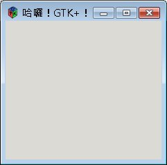

在
這邊說明一下如何在Windows作業系統之下撰寫、編譯GTK，GTK使用GLib、cairo、Pango、ATK、GTK+、gettext-
runtime、libpng、libjpeg、libtiff與zlib，所以您必須也取得這些套件，在GTK官方網站的 Windows Download 中可以取得，最簡單的方法是取得all-in-one bundle。
以下說明安裝的步驟：
- 在 http://www.mingw.org/ 下載 MingGW
-
在GTK官網中取得 all-in-one bundle
- 安裝 MinGW，選擇安裝base tools、g++ 及 make
- 解開all-in-one bundle
- 在環境變數PATH中加入MinGW的bin路徑與解開後的GTK之bin路徑
這樣就完成Windows下撰寫GTK所需的安裝了，您可以執行以下的指令取得include目錄資訊並儲存至inc.txt：
$ pkg-config --cflags --libs gtk+-2.0 > inc.txt
|
執行以下的指令取得lib目錄資訊並儲存至lib.txt：
$ pkg-config --libs --libs gtk+-2.0 > lib.txt
|
為了方便起見，可撰寫一個簡單的Makefile如下，並將方才的inc.txt與lib.txt之內容分別設定給CFLAGS與LIBS：
CC = gcc
CFLAGS = -mms-bitfields -IC:/Winware/Gtk/include/gtk-2.0
-IC:/Winware/Gtk/lib/gtk-2.0/include -IC:/Winware/Gtk/include/atk-1.0
-IC:/Winware/Gtk/include/cairo -IC:/Winware/Gtk/include/pango-1.0
-IC:/Winware/Gtk/include/glib-2.0 -IC:/Winware/Gtk/lib/glib-2.0/include
-IC:/Winware/Gtk/include/libpng12
LIBS = -LC:/Winware/Gtk/lib -lgtk-win32-2.0 -lgdk-win32-2.0 -latk-1.0
-lgdk_pixbuf-2.0 -lpangowin32-1.0 -lgdi32 -lpangocairo-1.0 -lpango-1.0 -lcairo
-lgobject-2.0 -lgmodule-2.0 -lglib-2.0 -lintl
main:
$(CC) foo.c -o foo.exe $(CFLAGS) $(LIBS)
然後您可以撰寫一個簡單的GTK程式：
#include <gtk/gtk.h>
int main(int argc, char *argv[]) {
GtkWidget *window;
gtk_init(&argc, &argv);
window = gtk_window_new(GTK_WINDOW_TOPLEVEL);
gtk_window_set_title(GTK_WINDOW(window), "哈囉！GTK+！");
gtk_widget_show(window);
gtk_main();
return 0;
}
為了可以顯示中文，您的檔案必須以UTF-8存檔（檔首無BOM），接著執行make指令：
$ make
gcc foo.c -o foo.exe -mms-bitfields -IC:/Winware/Gtk/include/gtk-2.0 -IC:/Winwar
e/Gtk/lib/gtk-2.0/include -IC:/Winware/Gtk/include/atk-1.0 -IC:/Winware/Gtk/incl
ude/cairo -IC:/Winware/Gtk/include/pango-1.0 -IC:/Winware/Gtk/include/glib-2.0 -
IC:/Winware/Gtk/lib/glib-2.0/include -IC:/Winware/Gtk/include/libpng12 -LC:/Winw
are/Gtk/lib -lgtk-win32-2.0 -lgdk-win32-2.0 -latk-1.0 -lgdk_pixbuf-2.0 -lpangowi
n32-1.0 -lgdi32 -lpangocairo-1.0 -lpango-1.0 -lcairo -lgobject-2.0 -lgmodule-2.0
-lglib-2.0 -lintl
|
程式將產生foo.exe，執行後的結果如下所示（編譯時可設定 -mwindows，點選執行程式時就不會出現 Console 視窗）：

|